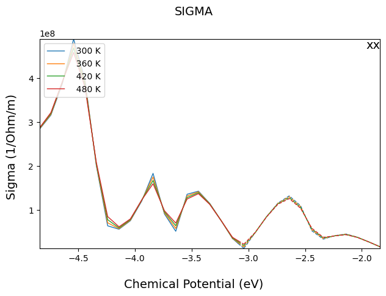
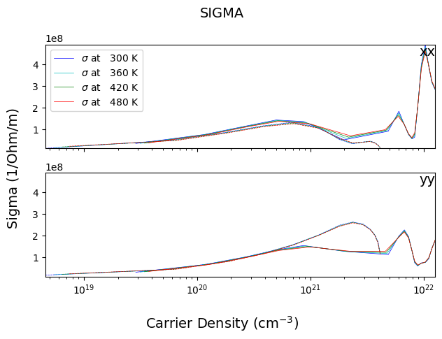
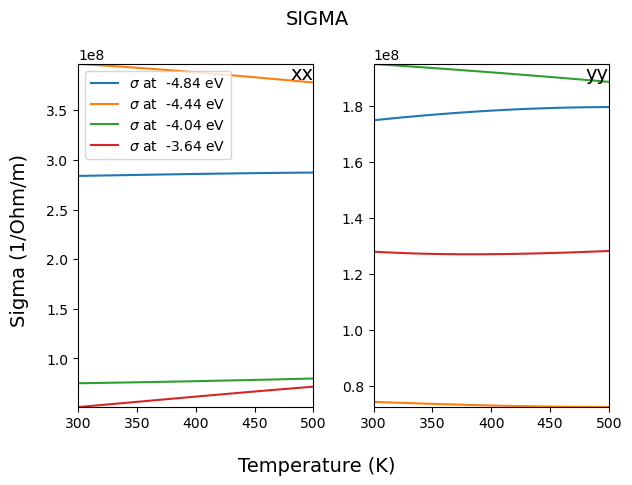
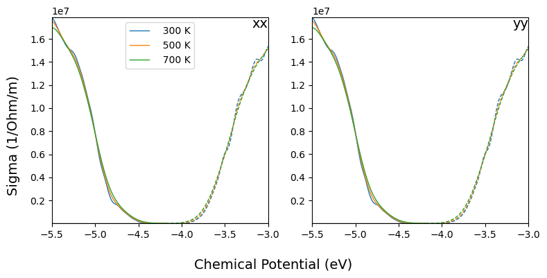
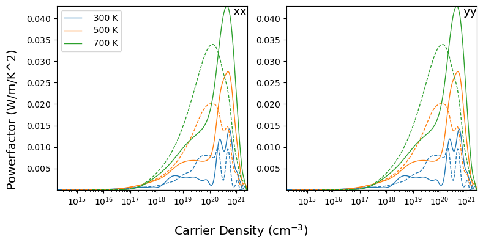
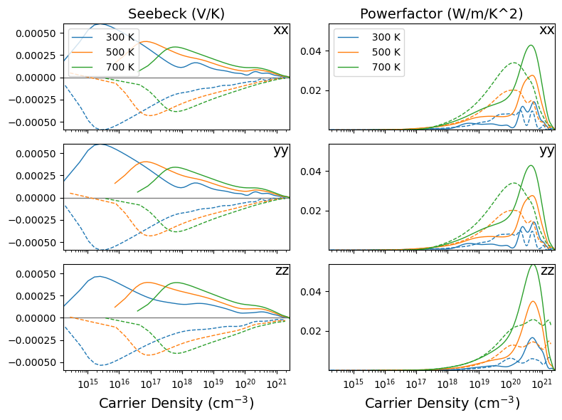
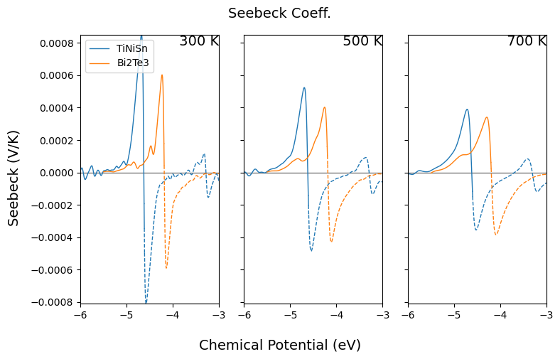

Thermoelectric Transport Properties
Here code examples for thermoelectric transport properties are given. It is developed for the ‘BOLTZTRA’ keyword of CRYSTAL properties calculation.
The ‘read_transport()’ method
This method is defined in the crystal_io.Properties_output class, which reads the ‘DAT’ formatted files (‘KAPPA.DAT’, ‘SIGMA.DAT’, ‘SIGMAS.DAT’, ‘SEEBECK.DAT’ and ‘TDF.DAT’) generated by CRYSTAL and return to classes based on transport.Tensor (‘KAPPA’, ‘SIGMA’, ‘SIGMAS’ and ‘SEEBECK’) or based ontransport.Distribution (‘TDF’).
Currently the standard output is not required for plotting. But its geometry information will be saved if given.
[1]:
from CRYSTALpytools.crystal_io import Properties_output
obj = Properties_output('trans_G2S.out').read_transport('trans_G2S_SK.DAT')
print('Object type: {}'.format(obj.type))
print('Temperature (K):')
print(obj.T)
print('Chemical Potential (eV):')
print(obj.mu)
print('Geometry:')
print(obj.struc)
Object type: SEEBECK
Temperature (K):
[300. 310. 320. 330. 340. 350. 360. 370. 380. 390. 400. 410. 420. 430.
440. 450. 460. 470. 480. 490. 500.]
Chemical Potential (eV):
[-4.84 -4.74 -4.64 -4.54 -4.44 -4.34 -4.24 -4.14 -4.04 -3.94 -3.84 -3.74
-3.64 -3.54 -3.44 -3.34 -3.24 -3.14 -3.04 -2.94 -2.84 -2.74 -2.64 -2.54
-2.44 -2.34 -2.24 -2.14 -2.04 -1.94 -1.84]
Geometry:
Full Formula (C48 S2)
Reduced Formula: C24S
abc : 12.251302 12.223170 500.000000
angles: 90.000000 90.000000 119.924043
pbc : True True False
Sites (50)
# SP a b c
--- ---- --------- --------- ---------
0 C -0.130438 0.133993 0.000898
1 C -0.133358 0.332481 -5.6e-05
2 C -0.133358 -0.465839 -5.6e-05
3 C -0.130438 -0.264431 0.000898
4 C 0.072706 -0.066403 0.000264
5 C 0.072706 0.139109 0.000264
6 C 0.065737 0.332463 -0.00028
7 C 0.065737 -0.467165 -0.000416
8 C 0.065737 -0.266726 -0.00028
9 C 0.267281 -0.066308 -0.000652
10 C 0.267563 0.133782 -0.00046
11 C 0.267281 0.333588 -0.000652
12 C 0.265303 -0.467684 -0.000598
13 C 0.265303 -0.266999 -0.000598
14 C 0.46534 -0.066598 -0.000378
15 C 0.467883 0.133803 -0.000516
16 C 0.467883 0.334079 -0.000516
17 C 0.46534 -0.468049 -0.000378
18 C 0.462232 -0.268918 9.2e-05
19 C -0.349876 -0.065801 0.001318
20 C -0.333112 0.131894 0.000118
21 C -0.332735 0.333666 -0.000232
22 C -0.333112 -0.465005 0.000118
23 C -0.349876 -0.284075 0.001318
24 C -0.050103 -0.134189 0.001308
25 C -0.050103 0.084085 0.001308
26 C -0.066867 0.265098 0.000116
27 C -0.067244 0.466412 -0.00023
28 C -0.066867 -0.331965 0.000116
29 C 0.134676 -0.133428 -0.000382
30 C 0.137784 0.068892 8.2e-05
31 C 0.134676 0.268104 -0.000382
32 C 0.132133 0.465881 -0.000514
33 C 0.132133 -0.333748 -0.000514
34 C 0.332735 -0.133718 -0.00065
35 C 0.334713 0.066973 -0.0006
36 C 0.334713 0.26774 -0.0006
37 C 0.332735 0.466453 -0.00065
38 C 0.332453 -0.333808 -0.000454
39 C -0.472686 -0.133587 0.000272
40 C -0.465716 0.066737 -0.000278
41 C -0.465716 0.267176 -0.000418
42 C -0.465716 0.467533 -0.000278
43 C -0.472686 -0.339098 0.000272
44 C -0.269541 0.064441 0.000902
45 C -0.266621 0.265849 -5.6e-05
46 C -0.266621 0.467597 -5.6e-05
47 C -0.269541 -0.333982 0.000902
48 S -0.330381 -0.16519 0.00359
49 S -0.069975 -0.034988 0.003576
The ‘transport’ module
Currently 2 basic (parent) classes are defined in this module, including transport.Tensor for ‘tensor-like’ thermoelectric properties and transport.Distribution for distribution functions.
The ‘Tensor’-based classes
Child classes include: Kappa, Sigma, Seebeck, SigmaS, PowerFactor and ZT.
Basic I/O with the from_file class method. The user can call either the Tensor class or child classes.
Calling Tensor for the optimal flexibility.
[2]:
from CRYSTALpytools.transport import Tensor
obj = Tensor.from_file('trans_G2S_SG.DAT')
print('Object type: {}'.format(obj.type))
Object type: SIGMA
Calling the child classes for safety. The following code leads to error.
[3]:
from CRYSTALpytools.transport import Seebeck
obj = Seebeck.from_file('trans_G2S_SG.DAT')
---------------------------------------------------------------------------
TypeError Traceback (most recent call last)
Cell In[3], line 3
1 from CRYSTALpytools.transport import Seebeck
----> 3 obj = Seebeck.from_file('trans_G2S_SG.DAT')
File ~/apps/anaconda3/envs/crystal_py3.9/lib/python3.9/site-packages/CRYSTALpytools/transport.py:688, in Seebeck.from_file(cls, file, output)
685 from CRYSTALpytools.crystal_io import Properties_output
687 obj = Properties_output(output).read_transport(file)
--> 688 if obj.type.upper() != 'SEEBECK': raise TypeError('Not a SEEBECK.DAT file.')
689 return obj
TypeError: Not a SEEBECK.DAT file.
With the PowerFactor.from_file() class method, the user can get ‘POWERFACTOR’ type (\(S^{2}\sigma\)) from 2 arbitrary types in ‘SIGMA’, ‘SIGMAS’ and ‘SEEBECK’. The sequence is arbitrary.
[4]:
from CRYSTALpytools.transport import PowerFactor
obj = PowerFactor.from_file('trans_G2S_SG.DAT', 'trans_G2S_SGS.DAT', output='trans_G2S.out')
print('Object type: {}'.format(obj.type))
print('Object unit: {}'.format(obj.unit))
Object type: POWERFACTOR
Object unit: W/m/K^2
Similarly, with ZT.from_file() the user can get ‘ZT’ type (thermoelectric dimensionless figure of merit, \(\frac{S^{2}\sigma T}{\kappa}\)) from 1 ‘KAPPA’ type file and 2 arbitrary ones from ‘SIGMA’, ‘SIGMAS’ and ‘SEEBECK’. The sequence is arbitrary.
[5]:
from CRYSTALpytools.transport import ZT
obj = ZT.from_file('trans_G2S_SG.DAT', 'trans_G2S_SGS.DAT', 'trans_G2S_K.DAT', output='trans_G2S.out')
print('Object type: {}'.format(obj.type))
print('Object unit: {}'.format(obj.unit))
Object type: ZT
Object unit: dimensionless
With the plot() method one can visualize object. By defult it plots the property along the ‘xx’ direction as the function of chemical potential \(\mu\). In that case, multiple data at different temperatures can be plotted as ‘series’.
Specifing the temperature values by plot_series.
[6]:
from CRYSTALpytools.transport import Sigma
obj = Sigma.from_file('trans_G2S_SG.DAT')
fig = obj.plot(plot_series=[300, 360, 420, 480])

The logic of setting plot parameters is similar to density plots (see examples of electronics.ElectronDOS), which is not repeated again here.
With x_axis='carrier', the user can plot data as function of carrier densities. Temperature is also used as plot series. direction=['xx', 'yy'] plots tensor properties along different directions into different subplots.
[7]:
fig = obj.plot(x_axis='carrier', plot_series=[300, 360, 420, 480],
direction=['xx', 'yy'], plot_label=r'$\sigma$ at',
plot_linewidth=0.5, plot_color=['b', 'c', 'g', 'r'])

x_axis='temperature' plots the property as the function of temperature. Correspondingly, the plot series becomes chemical potential.
[8]:
fig = obj.plot(x_axis='temperature', plot_label=r'$\sigma$ at',
direction=['xx', 'yy'], layout=[1,2], sharey=False,
plot_linewidth=1.5, plot_series=[-4.84, -4.44, -4.04, -3.64])

The ‘Distribution’-based class
Child classes include: TDF
Currently only the I/O method is defined for this class.
[9]:
from CRYSTALpytools.transport import TDF
obj = TDF.from_file('trans_G2S_TDF.DAT', output='trans_G2S.out')
print('Object type: {}'.format(obj.type))
print('Object unit: {}'.format(obj.unit))
Object type: TDF
Object unit: 1/hbar^2*eV*fs/angstrom
The ‘plot_transport_tensor()’ method
The plot.plot_transport_tensor() method is designed for multi-system plots of tensor-like properties. It can also be used as a shortcut to plot data from file just as the Tensor.plot method.
Normal usage with option='normal' and 1 property.
[9]:
from CRYSTALpytools.plot import plot_transport_tensor
fig = plot_transport_tensor('trans_Bi2Te3_SG.DAT', x_range=[-5.5, -3],
direction=['xx', 'yy'], figsize=[8, 4],
layout=[1, 2], sharey=False, legend='upper center')

Get power factor with a 1D list of 2 elements.
[10]:
from CRYSTALpytools.plot import plot_transport_tensor
fig = plot_transport_tensor(['trans_Bi2Te3_SG.DAT', 'trans_Bi2Te3_SK.DAT'],
option='normal', x_axis='carrier',
direction=['xx', 'yy'], figsize=[8, 4],
layout=[1, 2], sharey=False)

Plot power factor and Seebeck coefficient of Bi2Te3 together. In this case, option='normal' plots multiple properties at various ‘plot series’ along various directions.
Assuming every property is a ‘block’, the layout option specifies the layout of blocks. The layout within block is always nDirection*1. Similarly, sharey defines the y-axis within the same block.
[11]:
fig = plot_transport_tensor(
'trans_Bi2Te3_SK.DAT', ['trans_Bi2Te3_SG.DAT', 'trans_Bi2Te3_SK.DAT'],
option='normal', x_axis='carrier', direction=['xx', 'yy', 'zz'],
figsize=[8, 6], layout=[1, 2], sharey=True)

Compare data of 2 different materials with option='multi'.
NOTE
The entries must be of the same type, same dimensionality.
Multi-direction plotting is disabled.
directiononly accepts string input.Instead,
plot_seriesis used to generate subplots.This function accepts inconsistent plot series. The common plot series is found automatically. See the example below.
With x_axis='potential', temperature is used as plot series.
[12]:
from CRYSTALpytools.transport import Tensor
from CRYSTALpytools.plot import plot_transport_tensor
obj1 = Tensor.from_file('trans_TiNiSn_SK.DAT')
obj2 = Tensor.from_file('trans_Bi2Te3_SK.DAT')
print('Obj1 Temperature:')
print(obj1.T)
print('Obj2 Temperature:')
print(obj2.T)
fig = plot_transport_tensor(
obj1, obj2, option='multi', x_axis='potential', plot_label=['TiNiSn', 'Bi2Te3'],
title='Seebeck Coeff.', direction='xx', figsize=[8, 5], x_range=[-6, -3],
layout=[1, 3]
)
Obj1 Temperature:
[300. 400. 500. 600. 700.]
Obj2 Temperature:
[300. 500. 700.]

For more details please refer to the API documentations.